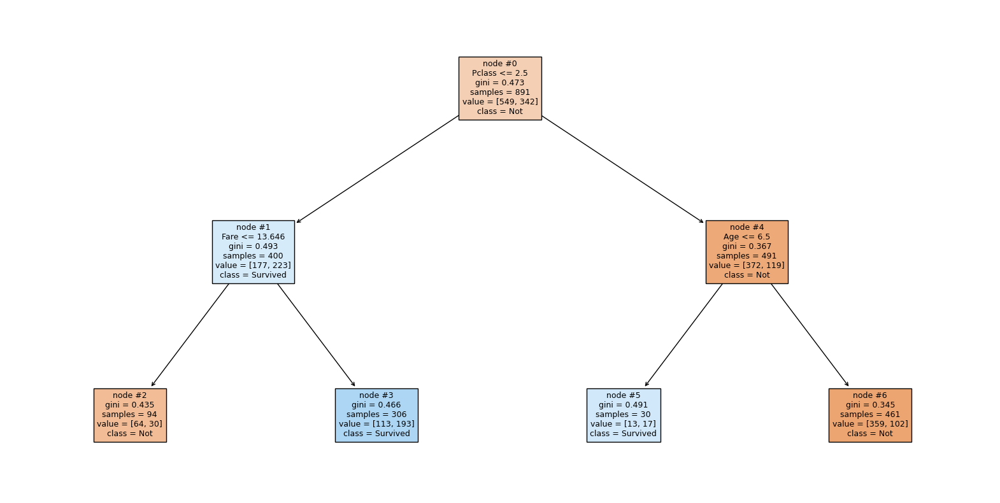

🌲 Decision Tree Visualization#
👨🏫 Vikesh K
📓 Lab-08
💡 “However difficult life may seem, there is always something you can do and succeed at.-Stephen Hawking” 💡
📝Lab Agenda#
Plotting of Decision Tree Plots
Importing modules and data#
import pandas as pd
import matplotlib.pyplot as plt
from sklearn import tree
from sklearn.tree import DecisionTreeClassifier
from sklearn.model_selection import train_test_split
from sklearn.model_selection import GridSearchCV
import numpy as np
import warnings
warnings.filterwarnings('ignore')
df = pd.read_csv("https://raw.githubusercontent.com/vkoul/data/main/misc/titanic.csv")
df.head()
| PassengerId | Survived | Pclass | Name | Sex | Age | SibSp | Parch | Ticket | Fare | Cabin | Embarked | |
|---|---|---|---|---|---|---|---|---|---|---|---|---|
| 0 | 1 | 0 | 3 | Braund, Mr. Owen Harris | male | 22.0 | 1 | 0 | A/5 21171 | 7.2500 | NaN | S |
| 1 | 2 | 1 | 1 | Cumings, Mrs. John Bradley (Florence Briggs Th... | female | 38.0 | 1 | 0 | PC 17599 | 71.2833 | C85 | C |
| 2 | 3 | 1 | 3 | Heikkinen, Miss. Laina | female | 26.0 | 0 | 0 | STON/O2. 3101282 | 7.9250 | NaN | S |
| 3 | 4 | 1 | 1 | Futrelle, Mrs. Jacques Heath (Lily May Peel) | female | 35.0 | 1 | 0 | 113803 | 53.1000 | C123 | S |
| 4 | 5 | 0 | 3 | Allen, Mr. William Henry | male | 35.0 | 0 | 0 | 373450 | 8.0500 | NaN | S |
Data Prep#
We will focus only on Numerical columns to keep the analysis straightforward
num_cols = df.select_dtypes(["int", "float"]).drop(columns = ['PassengerId']).columns.to_list()
df_num = df[num_cols].copy()
Filling in the missing value with median age
df_num.isna().sum()
Survived 0
Pclass 0
Age 177
SibSp 0
Parch 0
Fare 0
dtype: int64
median_age = df_num['Age'].median()
df_num['Age'] = df_num['Age'].fillna(median_age)
Prepare the X and y data#
x = df_num.drop(columns = ['Survived'])
y = df_num['Survived']
Model Fitting#
dt = DecisionTreeClassifier(max_depth = 2) # using depth of 2 to plot it properly
dt.fit(x, y)
DecisionTreeClassifier(max_depth=2)In a Jupyter environment, please rerun this cell to show the HTML representation or trust the notebook.
On GitHub, the HTML representation is unable to render, please try loading this page with nbviewer.org.
DecisionTreeClassifier(max_depth=2)
Plotting the decision tree#
# checking the depth
dt.tree_.max_depth
2
features = list(x.columns) # save the column names as features
Decision Tree Plotting
plt.figure(figsize=(20,10))
tree.plot_tree(dt
, feature_names = features # name of the features
, max_depth = 5
, filled= True # for color
, fontsize= 9
, node_ids = True # show the node number
, class_names= ["Not", "Survived"]) # Names of each of the target classes in ascending numerical order.
# show the plot
plt.show()

The chart is read, top to bottom, from left to right. Hence the Nodes are also ordered in the same manner
Verification of the numbers based on the chart
df_num.query("Pclass <= 2.5").shape[0]
400
df_num.query("Pclass <= 2.5 & Parch <= 0.5").shape[0]
297
# df_num.query("Pclass <= 2.5 & Parch <= 0.5")
df_num.query("Pclass <= 2.5 & Parch > 0.5").shape[0]
103
df_num.query("Parch <= 2.5").shape[0]
876
y.value_counts()
Survived
0 549
1 342
Name: count, dtype: int64